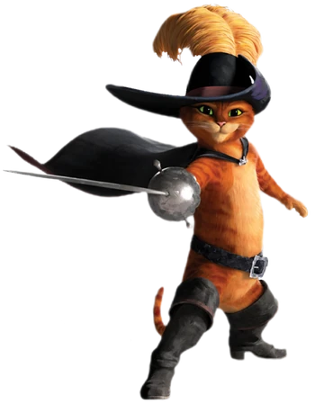

As dubladoras brasileiras mais famosas incluem Miriam Ficher, conhecida por dublar Angelina Jolie e Velma de Scooby-Doo, e Selma Lopes, a "rainha da dublagem", famosa por dar voz à Margie de Os Simpsons e à fada madrinha de Pinóquio, entre outros. Outras dubladoras de destaque são Úrsula Bezerra, voz de Goku criança e Naruto, e Tânia Gaidarji, com trabalhos em diversas animações.

A dublagem brasileira é reconhecida mundialmente por sua qualidade, e muitos dubladores se tornaram famosos por suas vozes marcantes em filmes, séries e animações. Alguns dos dubladores mais famosos do Brasil incluem Guilherme Briggs, Wendel Bezerra, Garcia Junior, Cecília Lemes, e muitos outros que emprestaram suas vozes a personagens icônicos.